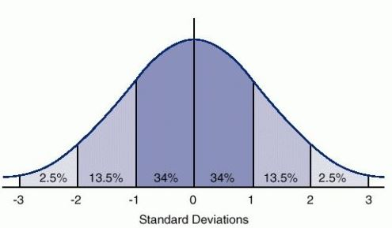
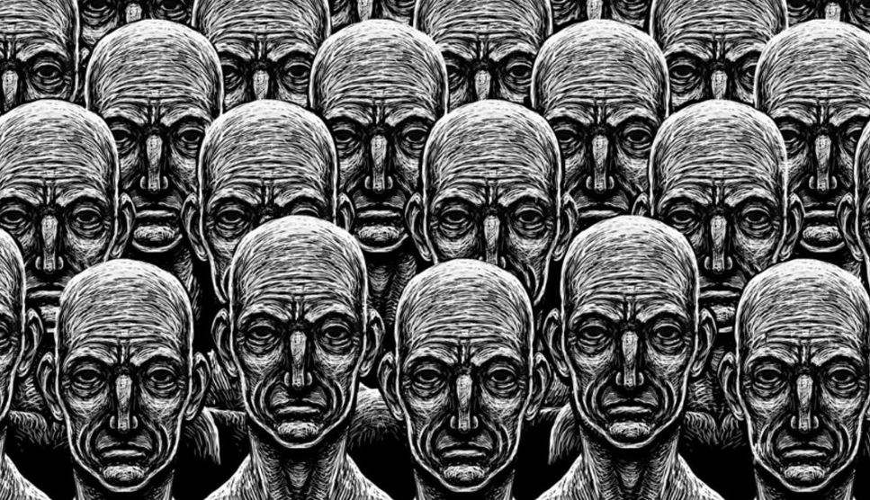

Textos interessantes sobre assuntos dos quais ninguém quer saber
Por Igor Buess
Gostamos de pensar que somos mentalmente normais e que nossa interpretação de mundo é a correta. Pensamos na loucura ou insanidade como algo distante do nosso cotidiano, coisa de filme ou que só acontece com gente desconhecida, nunca conosco.
Porém, faço as seguintes perguntas: O que é ser “normal”? Qual é a definição de “loucura”?
Para tentar responder a essas perguntas não vou consultar o Google, tentarei divagar usando a minha opinião pessoal adquirida através das minhas experiências.
Primeiramente, no que tange ao conceito de normalidade, creio que a curva de sino clássica pode nos ajudar entendê-lo melhor. Para quem não está familiarizado com curva de sino, ela se baseia na ideia de que a maioria das pessoas se encontra num eixo central de comportamentos comuns. Quaisquer discrepâncias para um dos dois extremos da curva, podem ser consideradas anormais. Isto é, quando a maioria das pessoas se comportar de determinada maneira, essa passa a ser considerada o “normal”.
Agora se tratando da definição de “loucura”, penso que a definição mais adequada seria a interpretação equivocada dos eventos externos e internos a pessoa. Ou seja, seria uma falha no entendimento de acontecimentos e até mesmo a possível imaginação de eventos que, de fato, nunca ocorreram.
“Mas o que isso tem a ver comigo?” - Pensa nesse instante o leitor.
Bem, meu amigo(a), como você tem certeza que a sua interpretação de mundo é a correta? Qual é o parâmetro ou âncora que te permite afirmar isso?
Provavelmente você não tem uma resposta objetiva para essas duas perguntas e, por isso, vou complementar com uma situação prática para desafiar as suas certezas (e piorar a sua confusão mental).
Você está andando numa rua deserta acompanhado de três amigos. De repente, você avista a 20 metros uma pessoa parada no caminho, em pé, apenas olhando em sua direção. Assustado, você para e seus amigos não entendem o porquê. Eles não estão vendo nada, mas na sua perspectiva a figura humana está bem ali na sua frente. Quem, de fato, está vendo o que é real?
Agora, imagine a mesma situação, porém desta vez seus três amigos avistam a figura humana a frente, mas você não. Você não vê absolutamente nada. Repito a pergunta: Quem, de fato, está vendo o que é real?
Como podemos perceber, a nossa noção do que é real ou não depende, em grande parte, da relação numérica entre a nossa experiência e a de outras pessoas. Ou seja, se muitas pessoas tem a mesma experiência que você, é um grande indicativo que o evento é real. Novamente, a noção de “normalidade” se entrelaça fortemente com o número de pessoas vivenciando determinado evento.
Não sei quanto ao leitor mas, a meu ver, esse tipo de dependência é uma âncora muito fraca para definição de realidade concreta. Se estivéssemos em uma ilha deserta, sem quaisquer outras pessoas para confirmar nossas perspectiva, como saberíamos o que é real?
Talvez você esteja pensando que o meu tipo de exemplo é um pouco absurdo demais por se tratar de possíveis alucinações. Por isso, vou mudar um pouco para uma situação mais sutil. Vamos falar agora de ideias, sejam elas políticas, filosóficas, religiosas, etc.
Como podemos definir, nesses âmbitos, o que é correto ou não? O número de pessoas que acredita em determinada corrente é um indicativo forte de “veracidade” da mesma? Caso um grande número de pessoas acredite numa ideia falsa, o “normal” se tornaria a insanidade, certo?
Creio que este texto já está suficientemente confuso. Dessa forma, queria finalizar dizendo que, possivelmente, devemos nos perguntar com mais frequência o quão sãos nós realmente somos. Por em cheque nossas crenças e buscar evidências para entender até que ponto poderíamos estar acreditando em algo inverídico.
Talvez insanidade seja nunca questionar a sua própria sanidade. Num mundo incerto, somente o louco vive com certezas.